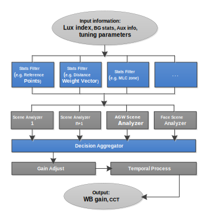

Automatic White Balance (AWB) tuning is required as part of the camera tuning
process. AWB processing estimates the illuminant source of an image by analyzing the
gray stat locations in the Rg/Bg space. The diagram below illustrates the information
flow and processing done by AWB 7.0.

- The initial phase of AWB processing begins with the user
uploading a defined set of images that are analyzed by the AWB initial tuning
module. AWB initial tuning collects basic data from the images, such as lux
index and Bayer Grid (BG) stats, and generates initial values for all AWB
parameters .
- The second phase of AWB processing involves a series of stats
filters. Stats filters include functions such as: subsample, stats screen, stat
decision, distance weight vector, illuminant weight vector, and misleading color
zone. The filters screen AWB stats and generate information for the use of other
stats filters and scene analyzers.
- The third phase of AWB processing involves a series of scene
analyzers that compute an AWB decision point and confidence level. The tool
provides five predefined scene analyzers that are easily customized to user
preferences. Users may also configure additional scene analyzers to handle
various scenes and corner cases. A special scene analyzer is the Advance Gray
World (AGW) scene analyzer which computes a decision point based on information
from each stats filter module.
- In the fourth phase of AWB processing, the decision analyzer uses
the decision points and confidence levels output from each scene analyzer to
compute a final decision point.
- In the final phase of AWB processing, the user has the
opportunity to adjust the final AWB gain to reach a user-preferred color tone
using the triangle gain adjust module.